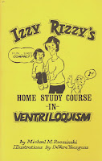

Practicing Conversation
4/28/2011
By Michael M. Rzeminski
It will be important to work on your dialog until the conversation between your figure and yourself is so natural that the audience will think it is actually two different people carrying on the conversation.This is where your acting ability will show up. Work on each line to get it down in your mind. Work in front of the mirror to see your facial expressions. Remember that your facial expressions should be opposite of what the figure's voice is expressing.
It is good to practice conversation with a friend or relative so that you can start thinking as another personality. Do this by carrying on a simple three way conversation between you, your figure, and a friend. Make sure that you do not do more talking than your figure. Try to get the conversation to the point where the third party will speak to your figure without hesitation or with awareness that your figure is not real.
* * * * *
The above excerpt is from Izzy Rizzy's Home Study Course in Ventriloquism, copyright 1975. A copy of this 42 page collectible book has been provided for today's prize by George Boosey, and the winner by way of today's prize drawing, is Jose Moraga.
It will be important to work on your dialog until the conversation between your figure and yourself is so natural that the audience will think it is actually two different people carrying on the conversation.This is where your acting ability will show up. Work on each line to get it down in your mind. Work in front of the mirror to see your facial expressions. Remember that your facial expressions should be opposite of what the figure's voice is expressing.
{kind=link}

It is good to practice conversation with a friend or relative so that you can start thinking as another personality. Do this by carrying on a simple three way conversation between you, your figure, and a friend. Make sure that you do not do more talking than your figure. Try to get the conversation to the point where the third party will speak to your figure without hesitation or with awareness that your figure is not real.
* * * * *
The above excerpt is from Izzy Rizzy's Home Study Course in Ventriloquism, copyright 1975. A copy of this 42 page collectible book has been provided for today's prize by George Boosey, and the winner by way of today's prize drawing, is Jose Moraga.